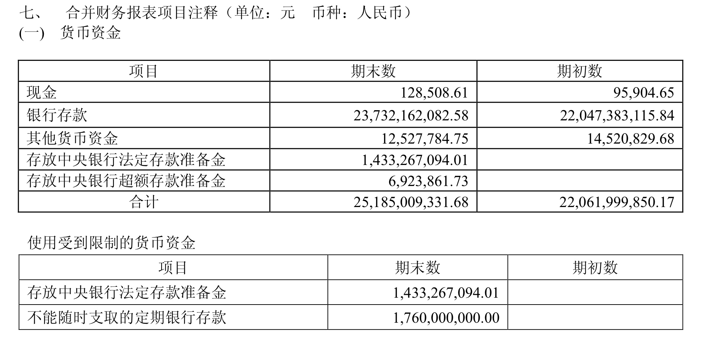
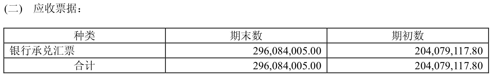
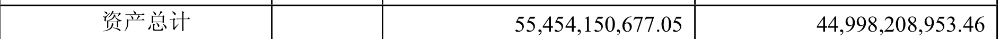
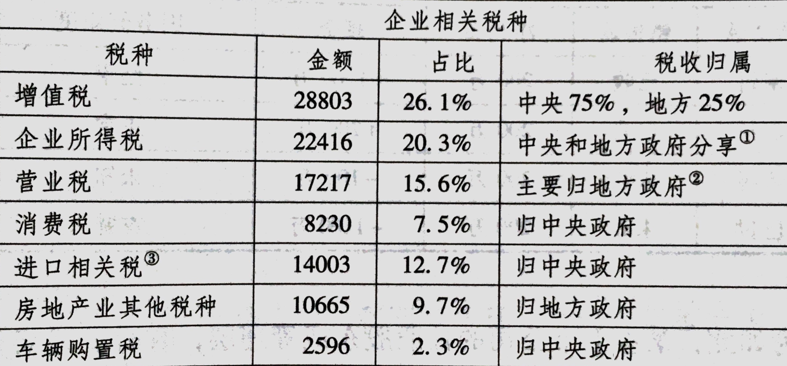

基础知识--三张表
资产负债表
资产负债表，是企业在报表日结束那一刻，资产、负债及权益的定格照片。
表的右边，是钱的来源；
表的左边，是钱的去处；
表的右边--钱的来源
钱的来源，不外乎借债或股东投入，所以，表的右边，分为负债和权益两大项。
负债告诉你，公司的家当里，有多少是借的钱；
权益告诉你，有多少是股东的钱。
表的左边--钱的去处，组成企业资产
最容易变现的是货币，放在最前面；
最不易变现的固定资产、无形资产、商誉等，放在最后面。
如何看？
可以对照以前的看，了解每个单项是怎么变的。闭上眼，想象自己是老板，把各项资产如此这般的腾挪，想想为什么这么干，干得对不对，这是看财报时最享受的事情。如何自信心不够，就把所有数字同比缩小到自己日常习惯驾驭的数字级别，然后之巅江山。
另一个重要的方法是跟同行比照着看，看不同项目总资产中占比有何不同，思考为何不同，这不同是优势还是劣势。尤其是应收票据、应收账款、应付账款、预付款项几个项目，可以看出公司与上下游之间的地位，展示公司竞争力的强弱。
利润表--也叫“损益表”
容易造假的根源是：权责发生制 1
不考虑投资收益和资产减值损失的话，收入减去各类支出，就是营业利润。营业利润是一家公司的核心利润，是持续竞争力的体现，是利润表上最需要重点关注的数字。
营业利润 + 主营业务以外的收支 = 利润总额 （营业外收支占比达的公司，一般要警惕，都是些不让人省心的货）
利润总额 - 所得税 = 净利润
注：上市公司报表里的收入，是不含增值税的。 17%
投资者可以将成本、税收、费用各自占收入的比例，与同行对比、与历史对比。如果比例异常，就要去财报附注里寻找解释。如果解释不足与另你放心，就放弃这家公司。投资原则：市场利润无穷，自己本金有限。 宁可错杀而少赚，也不能踩雷亏本。
并非每家子公司由上市公司100%持股，那些在子公司里占点股的小股东，他们的股份对应的资产，在资产负债表里叫做“少数股东权益”；他们的股份对应的利润或亏损，在利润表里叫做“少数股东损益”
从净利中去掉它，剩下部分，便是报告期内上市公司股东拥有的净利润了，报表上的这一项叫：归属母公司所有者的净利润。
归属母公司所有者的净利润/公司总股数 = 每股收益
市盈率（PE）2 = 股票价格/每股收益 没有什么神秘，是投资回报率的倒数
现金流量表
记录公司现金的流入和流出。
由于现金收益率为零，所以无论是公司还是个人，都不会持有大量的现金，而是选择存银行或购买理财产品，这类东西被称为“现金等价物”
现金流量表负责展示资产负债表货币资金科目里“现金及现金等价物”的变化过程。
获取上市公司财报
巨潮咨询： www.cninfo.com.cn
上交所：www.sse.com.cn
深交所：www.szse.cn
中国证券会 www.csrc.gov.cn
财报分析--贵州茅台 600519
13年年报 下载地址

财报中若没有这条，即会计事务所不愿意发表“标准无保留意见”，完全可以理解为会计师热为账目有问题，收钱有风险。
| 会计师出具意见 |
会计师真实意思 |
| 标准无保留意见的审计报告 |
造假痕迹未被本人发现 |
| 附带说明的无保留意见的审计报告 |
黑锅有人背，本人大胆收钱 |
| 保留意见的审计报告 |
假报表，别看了 |
| 无法出具意见的审计报告 |
本人拒绝和拙劣的骗子合作 |
| 否定意见审计报告 |
本人具备诈骗犯 |
资产负债表分析
尝试着按照货币资金、经营相关资产、生产相关资产、投资相关资产 四类分析公司资产。
经营相关资产，主要指应收、预付和存货；
生产相关资产，主要指固定资产、在建工程、无形资产、商誉和递延等科目；
投资相关资产，公司持有的各类证券、债券、理财、其他金融资产和投资性房地产；
货币资金：


对于货币资金的分析原则： 货币资金需要与短期债务及经营需要相匹配。
与短期债务的匹配情况，代表企业的偿债能力；
与经营需要的匹配情况，代表企业的资金运用能力；
货币资金过小，则可能代表偿债能力不足，或者经营中捉襟见肘。
货币资金过大，则代表资金运用能力较弱，或者可能资金性质有问题。

如上图所示，茅台公司，没有息负债；经营活动中持续产生大量现金流入；投资计划加分红计划累计不超过百亿；账面上保留着超过200亿现金及现金等价物，属于典型的资金运用能力低下。
经营相关资产
销售行为发生，要么收了现金，要么收了票据，要么变成应收账款。
应收票据
分为：
- 银行承兑汇票 （靠谱一些，损失货币的时间价值，可提前支取需『贴现』）
- 商业承兑汇票（视企业现金流状况而定）

应收票据全部由银行承兑汇票组成，证明企业地位强势，产品抢手。
应收账款
俗称 赊销，白条子。 现如今，大部分产品都是买方市场，通行模式是先拿货，一段时间后付款。
陷阱：权责发生制容易在应收账款项做收入，如当年的长虹45亿的应收账款。
预付账款
一家公司，如果经常需要预付大量款项给供应商，一般说明企业在商业生态链上地位不高或信用不好。
陷阱：大量预付款出去，然后通过营业收入回来虚增利润。
应收利息和应收股息
应收利息：是公司持有各类债权期间应该收到的利息；
应收股息：公司持有股权期应该收到的其他公司分配的股息
其他应收款
优秀的上市公司有个特点，就是『其他应收款』和『其他应付款』科目涉及金额极小，甚至为零。如果金额大一般给人经营不够规范的初步印象。
本节要点
| 科目 |
关注要点 |
| 应收票据 |
银行承兑汇票和商业承兑汇票的不同意义 |
| 应收账款 |
应收账款增长幅度及坏账准备计提政策 |
| 其他应收款 |
越小越好，为零最好 |
| 存货 |
存货和营业成本的合理比例 |
生产相关资产
固定资产
对于这个科目，知道以下5点足矣
- 固定资产要计提折旧。买资产的时候，已经付钱出去了，但这个购买成本要摊在资产的生命周期里。因此，虽然不用付现金出去，但折旧要作为公司当期经营的费用，从利润表里扣除。
- 除了折旧，固定资产年末（或季度末）还需要进行减值测试。
- 折旧政策有好几种，使用哪种，无需深究，但突然改变折旧政策，需要小心。
- 因为折旧费用，需要从利润表中扣除，会减少当期利润。优秀的公司一般倾向于用快速折旧的方法，增加前期费用，减少前期利润，将利润推到以后年分去；相反，一些今日不管明日事的公司，则倾向于拉长折旧时间。
- 折旧并不意味着真的产生损失了，有些固定资产年年折旧，账面价值极低甚至为零。但事实上，他们可能随着时间的推移，实际价值或者没有那么大降幅，甚至还有增长。如企业购买的城区房产，这块资产常常是报表中潜伏的公司价值，这种潜伏价值，因其容易成为股价的催化剂而被许多投资人关注。
在建工程和工程物资
在建工程不需要计提折旧，因此，如果一家公司在建工程数目巨大，迟迟不转入固定资产科目，投资者一般需要对其采取怀疑态度。一般有两种可能：
1. 工程已经完工并投入使用，但为了避免折旧，美化当前利润，而不将其转为固定资产；
2. 通过在建工程将公司的钱支付给虚构或关联的供应商，然后再以采购公司商品和服务的名义，变成收入回流公司。这种在建工程，最后往往通过大比例折旧或者以意外损毁等名义，计提高额减值损失，光明正大的『毁尸灭迹』。
无形资产
包括专利权、商标权、著作权、土地使用权、特许权、版权和非专利技术等。无形资产是资产，所以也需要和固定资产一样需要『折旧』，成为：摊销。
递延所得税资产和负债
由于税务局计算的公司利润和公司财务算的不一样，可能大于公司产生的利润，也可能小于公司计算的利润，递延所得税资产和负债便因此而产生了。
凡是在递延所得税资产或负债里的，都只是税务局和公司财务关于收入和费用应该本期算还是以后算的分歧。
产生递延所得税资产、负债的部分常见情形：

本节重点

投资相关资产
交易性金融资产
如果公司把 债券、股票、基金、权证等金融资产放进『交易性金融资产』科目，证明公司是打算短期持有来获取差价。公司只是『打算』短期持有，至于最终持有多久，不重要也没人管。
公司的投资一旦放进这个科目，是不允许转换到其他科目的。
交易性金融资产的特点是不需要计提折旧减值，直接以持有期间的公允价值变动，作为该项资产的当期损益，进入利润表的『公允价值变动收益』科目，影响公司当期利润。
交易费用作为当期费用，从利润表扣除。
持有期间产生的利息和分红，作为投资收益，加进利润里。
不卖出，税务局不收税！
持有至到期投资
本节要点

负债和所有者权益
负债
tip: 年度员工薪酬计算方法：
应付职工薪酬期末余额为A，年初余额为B，先就流量表付给职工以及职工支付的现金为C，那么：
员工本年度薪酬总额 = A - B + C。
从两个角度看负债：
负债的来源
一般是有息负债。
是否承担利息 分为有息负债和无息负债
所有者权益
也叫股东权益，由公司的总资产减去总负债得出。也有人叫 『净资产』
由4个部分构成：
资本公积：是股东投入的超过股本的部分，不是由企业利润形成的。可以用来转增股本，不能用于分配。
资本公积（capital reserves）是指企业在经营过程中由于接受捐赠、股本溢价以及法定财产重估增值等原因所形成的公积金。
资本公积是与企业收益无关而与资本相关的贷项。资本公积是指投资者或者他人投入到企业、所有权归属于投资者、并且投入金额上超过法定资本部分的资本。
盈余公积是指企业从税后利润中提取形成的、存留于企业内部、具有特定用途的收益积累。盈余公积是根据其用途不同分为公益金和一般盈余公积两类。公益金专门用于企业职工福利设施的支出，如购建职工宿舍、托儿所、理发室等方面的支出。旧公司法第一百七十七条规定，公司制企业按照税后利润的5%至10%的比例提取法定公益金。2006年新公司法仅规定公司按照税后利润的10%提取法定公积金。取消了所有关于“法定公益金”的规定。公司制企业的法定盈余公积按照规定比例10%从净利润（减弥补以前年度亏损）按照《企业所得税》规定，以前年度亏损（5年内）可用税前利润弥补，从第六年起只能用第六年税后利润弥补。
法定盈余公积累计额已达到注册资本的50%时可以不再提取。在计算法定盈余公积的基数时，不应包括企业年初未分配利润。
企业提取的盈余公积可用于弥补亏损、扩大生产经营、转增资本（或股本）或派送新股等。
快速阅读资产负债表
负债和所有者权益优先看
看财报最后一行的『负债和所有者权益合计』栏目中的数字，便知道公司有多少家当（资产=负责+权益），再看上一行『所有者权益合计』，便知道了公司有多少钱是自己的，多少钱是借来的。

解读
2013年的总资产为 555亿，比12年450亿增加了105亿；
555亿里面有441亿是自己的，差额114亿是借的。12年的借款是95亿（450-355）。
所以2013年增加的105亿里，有19亿是新借的，其他86亿是挣的钱。
问题来了，2013年净利润是159亿，怎么这里只有86亿元？
答案是：差额部分分红分掉了。
负债表从何下手
针对负债表，接下来就要寻找以下答案：
为何借？向谁借？借多久？利息几何？
这几个问题帮助我们理清企业借款的原因及迫切程度。
如果企业借款的代价比较高，通常都是一种危险的信号。
负债率 = 负债/总资产
传统的方法不够客观，建议使用
有息负债率 = 有息负债 / 总资产
具体多少值合适，需要参考同行业的做法。
如果超过60%，则公司太过激进，抵抗宏观因素的能力较差。
资产项目
本章是作者自己的经验
看钱的去处： 原来的钱的分布有什么变化，新钱（新借的新挣的）花哪儿去了。

总资产 555亿，比去年450亿 增长 105亿元。
然后要看四个要点：
- 生产资产 / 总资产
- 应收 / 总资产 （超过三成就很严重了）
- 货币资产 / 有息负债 （主要看是否有债务危机）
- 非主业资产 / 总资产
生产资产包括：固定资产、在建工程、工程物质以及无形资产里的土地。
这些比值可以考虑从三个角度看：结构、历史、同行
结构分析 轻资产公司优于重资产公司
当年税前利润总额 / 生产资产 > 12%,则属于轻资产
利润表
创造利润的过程
分为两步：
- 从营业收入到营业利润的过程；
- 从营业利润到净利润的变化；
理解：收付实现制 、权责发生制
收入及费用并不是按照是否收到钱来确定，因而，利润表内几乎每个科目都充满着估计和财务艺术。
弄清楚每个科目代表的含义，以及背后的估计方法，才能正确理解上市公司交出的利润表。
营业总收入
一家企业的收入，可以由三种途径产生：
- 销售商品
- 提供劳务
- 让渡资产使用权（现金、无形资产、固定资产）
公司的营业收入不包括为第三方或客户代收的款项（代收的增值税不计入报表收入）。
营业收入的确认原则
大部分企业造假，都是把不符合确认条件的收入确认为当期的收入。
财报中搜索『满足以下条件时确认』 ，能够找到该公司对收入的确认原则，第一次阅读某公司财报时一定要看。

毛利润需要投资者重点关注
投资者需关注的是营业成本和营业收入的比值。
毛利润占主营收入的比例，成为毛利率。
为了衡量公司的毛利率，需要将其与同行进行比较，毛利率比同行高很多的企业，要么属于行业内强者，要么就是造假的骗子。
毛利率的提高，要么是成本的下降，要么因售价的上升。
毛利润是企业利润的重要来源之一。
大体来说，企业最终利润的高低由三个因素决定：
- 毛利率高低 茅台模式 产品竞争力强弱 风险：口碑变坏，竞品出现
- 周转率快慢 沃尔玛模式 管理层运营能力的高低 风险：管理层变化
- 经营杠杆大小 银行模式 企业承担风险的大小 风险：宏观资金松紧
主营业务分类收入
主营业务分类涉猎越广的公司，会先对其价值打个折。多元化 --> 多元恶化
营业总成本
营业成本
三费（销售费用，管理费用，财务费用）
营业利润
看利润表，最重要就是看营业利润和营业利润率（营业利润/营业总收入）
净利润
净利润 = 营业利润 + 营业外收支净额 - 所得税
如果企业的利润经常主要来源于营业外收入，基本能肯定，企业在打扮自己的报表，建议远离。

净利润不是公司挣到的钱
净利润一定要和现金流量表的『经营现金流净额』对照着看。
通过 经营现金流净额/净利润 来衡量净利润的含金量
如果该比值连续几年都大于1，则是『印钞机』；
反之，就得警惕，找其原因。
速读利润表
营业收入
主要看增速，和行业的平均增长速度对比，高于行业的增速，才说明市场份额在扩大。
有个常识容易被人忽略，持续的增长相当的艰难，谨防过于乐观。
毛利率
毛利率在40%以上的企业，一般都具备某种持续的竞争优势。
选择低毛利率的企业，意味着要依赖管理层的运营能力或者冒高倍杠杆的风险，风险会更大。
费用率
费用率也是用来排除企业的
一般来说，销售费用比较高的企业，产品或服务自身没有『拉力』，必须靠营销『推力』才能完成销售。
而销售费用比较低的企业，通常是因为产品或服务本身容易引起购买者的重复购买，甚至是自发的分享传播。
因而销售费用高的企业，在企业扩张过程中，不仅需要扩大产品或服务的生产能力，同时需要不断配套新的团队、资金和促销方案，这对企业的管理能力边界要求极高，稍有不慎，企业可能会在规模最大的时候，暴露出系统性的问题，导致严重后果。
费用率也可以用费用占毛利润的比例来观察：
如果费用能控制在毛利润的 30%以下，就是优秀的企业；
30-70%之间，仍然具有一定的竞争优势；
大于70%，关注价值不大。
把费用率和毛利率结合起来看，目标就是排除净利润率低的企业。
营业利润率
不仅看数字大小，更要对比历史变化。
营业利润率上升，主要看是因为售价提升、成本下降，还是费用控制得力？
提价会不会导致市场份额的下降？
成本是全行业降了，还是公司独降？原因是什么？是一次性影响还是持续影响？
费用控制有没有伤及到团队战斗力？是一次性的费用减少还是永久性的费用减少？
竞争对手什么反应？
经营现金流净额/净利润
现金流量表--事关存亡的表
分为：
【找钱】筹资活动现金流
【挣钱】投资活动现金流、经营活动现金流
现金流量表是从资产负债表和利润表推导出来的，是对两张表的补充说明，用现金流量表的数据去质疑利润表和资产负债表的财务分析方法是不靠谱的。